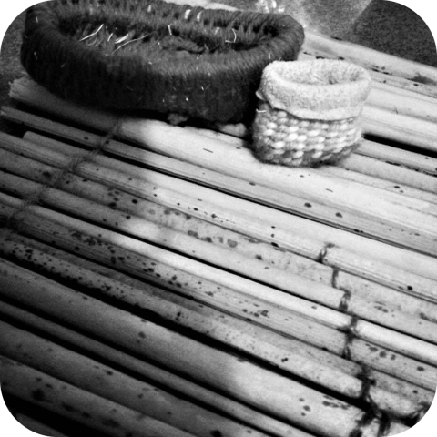

About me
I am a syilx woman from the Penticton Indian Band. I am passionate about idigenous language and culture revitalization. I am an interdisciplinary artist with an array of mediums. My styles range from classic to contemporary. I write fictional short stories and modern poetry. In addition I use traditional storytelling in nsyilxcen to create a captivating and unique performance. I sing and drum traditional syilx music. I use natural materials to create art such as tule mates, baskets, mocassins and beadwork.
Skills
Traditional Drumming and Singing
Indigenous Story Telling
Indigenous Art Work
Youth Workshops
Experience
- Sanitzed Film 2010-Main Character
- ONA Youth and Elders Forum 2014-Traditional Story Telling Performance
- Thompson Okanagan Tourism Association 2015-Traditional Story Telling Performance
- Talking Stick Festival 2015-Traditional Story Telling Performance
- Penticton Art Gallery 2014-2019-Art Exhibition
- Methow Valley Interpretive Center 2016- Traditional Story Telling Performance
- Penticton Art Gallery 2014-2017-Traditional Singing
- Okanagan Nation Alliance Salmon Feast 2017-Traditional Singing
- En'owkin Art Showcase 2014-2018
- Penticton Downtown Association BC Day 2016-2018-Opening Syilx Traditional Song
- Penticton Downtown Association Canada Day 2016-2017-Opening Syilx Traditonal Song
- Weaving Reconciliation our Way 2018-Opening Syilx Traditional Song
- Smiymay? Children and Youth Inniative 2018-Project Coordinator
- Ecommunity Youth Workshop 2017-2018-Workshop Presenter
- Penticton Indian Band Natural Resources Archaeology Youth Workshop 2017-2018Workshop Presenter
- Canada Day Welcoming of Prime minister Justin Trudeau 2018-Opening Syilx Traditional Song
Education
FITC Innovations in Technology Certificate- 2019
First Peoples Indigenous Language Mentor Apprentice Program 2018-2021
National Aboriginal Professional Artist Training 2 year Certificate- 2014-2017
Awards
Penticton Arts Council Youth Award 2017
Armstrong Syilx Language Award 2015
Media
Contact